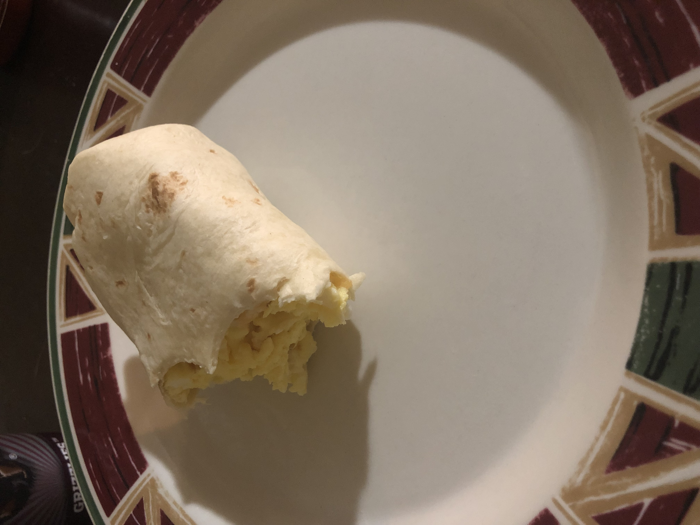

Breakfast Burrito

Ingredients
- 4 eggs
- 1 flour tortilla
- 1 tespoon butter
- quarter cup shredded mexican cheese
- table spoon Alpine Touch seasoning
- 3 slices of ham, or bacon, or sausages
Directions
- crack 4 eggs in a bowl and scramble them
- turn on stove to 7 out of ten, melt butter in pan
- once melted, place scrambled eggs in pan
- cook for 5-10 minutes will moving eggs around in pan
- when eggs are done, place tortilla in microwave for 15 seconds
- when tortilla is finished, remove it from microwave
- put eggs in straight line across middle of tortilla
- pour cheese evenly throughout the eggs
- cut up ham, then add on top of eggs
- sprinkle alpine touch
- wrap up tortilla
- enjoy
Contact Me
email me
my twitter page
32 Campus Dr. Missoula MT 59812